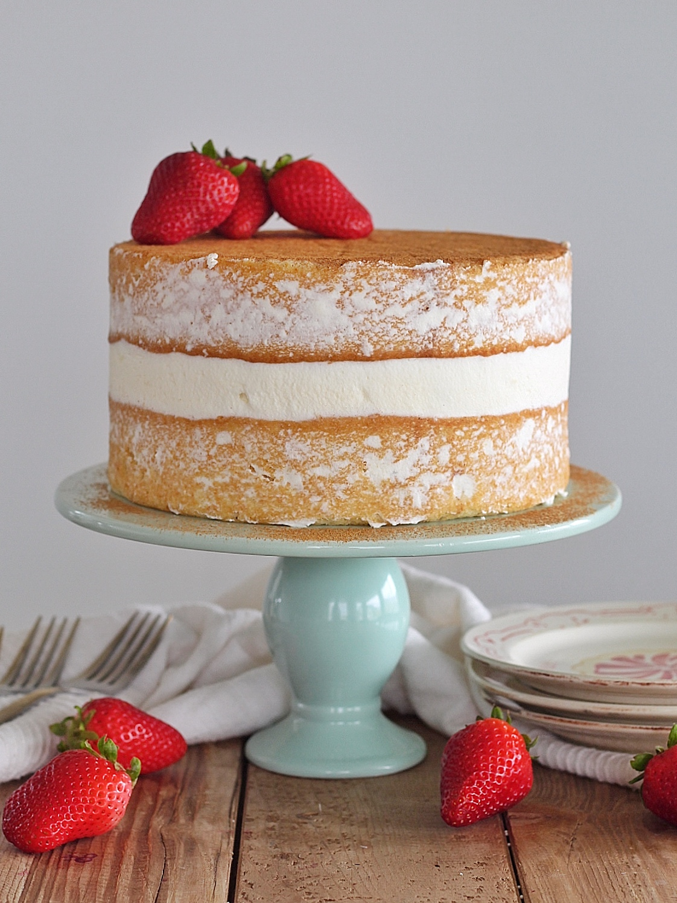

Tres Leches Cake

A Mexican Three-Milk Soaked Delicacy
Tres Leches Cake is a popular Latin American dessert known for its rich, moist texture and sweet, creamy flavor. The name "tres leches" translates to "three milks," referring to the three types of milk—evaporated milk, condensed milk, and heavy cream or whole milk—used to soak the sponge cake. This process gives the cake its signature softness and richness.
Typically, the cake is made from a light and airy sponge base, allowing it to absorb the milky mixture without becoming too soggy. It is often topped with whipped cream and sometimes garnished with cinnamon, fresh fruit, or caramel for added flavor. Tres Leches Cake is widely enjoyed across Latin America and has become a favorite dessert in many parts of the world due to its indulgent taste and melt-in-the-mouth texture.
Ingredients
Cake:
- 1 cup all-purpose flour
- 1 1/2 teaspoons baking powder
- 1/4 teaspoon salt
- 5 large eggs, separated
- 1 cup granulated sugar, divided
- 1/3 cup whole milk
- 1 teaspoon vanilla extract
Milk Mixture:
- 12-ounce can evaporated milk
- 14-ounce can sweetened condensed milk
- 1/4 cup whole milk
Whipped Topping:
- 1 pint heavy whipping cream
- 3 tablespoons powdered sugar
- 1/2 teaspoon vanilla extract
- Ground cinnamon or strawberries for topping
Steps
- Preheat oven to 350°F.
- In a medium bowl, combine flour, baking powder, and salt. Separate the eggs into two mixing bowls.
- Add ¾ cup sugar to the egg yolks and mix on high speed until pale yellow. Stir in milk and vanilla.
- Fold the egg yolk mixture into the flour mixture gently.
- Beat egg whites on high speed, gradually adding the remaining ¼ cup sugar until stiff peaks form. Fold into the batter.
- Pour batter into an ungreased pan and bake for 25-35 minutes, or until a toothpick inserted in the center comes out clean.
- Allow the cake to cool completely. Poke holes all over the top with a fork.
- Mix evaporated milk, condensed milk, and whole milk. Pour over the cake, ensuring even absorption. Refrigerate for at least 1 hour.
- Whip heavy cream, sugar, and vanilla until stiff peaks form. Spread over the cake.
- Garnish with cinnamon or strawberries. Serve chilled and enjoy!
Back to Home